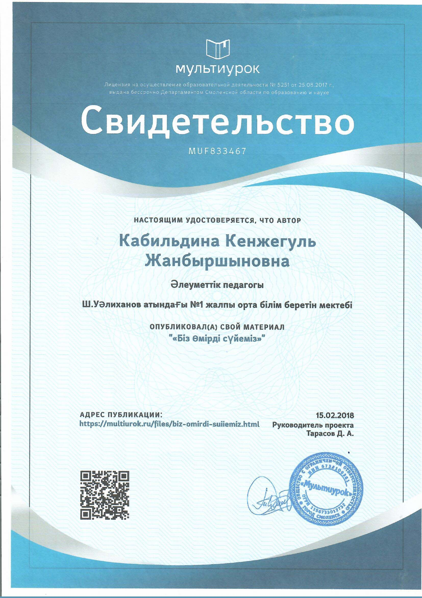
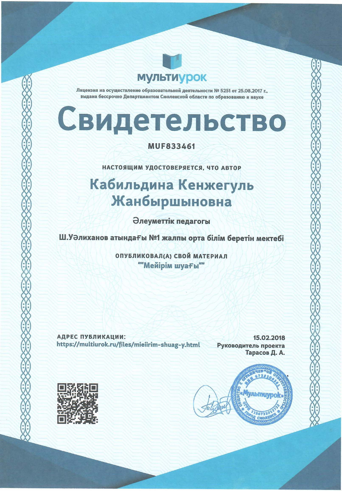
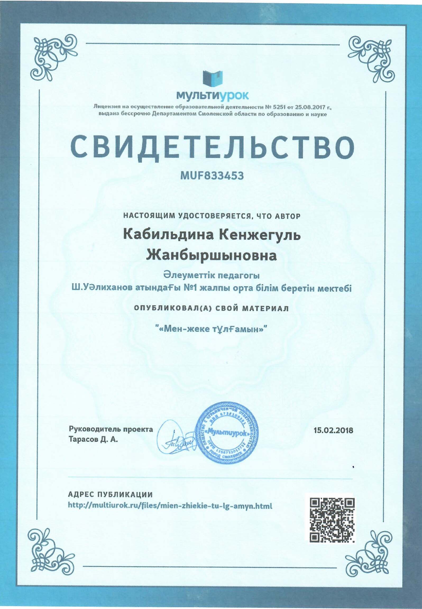
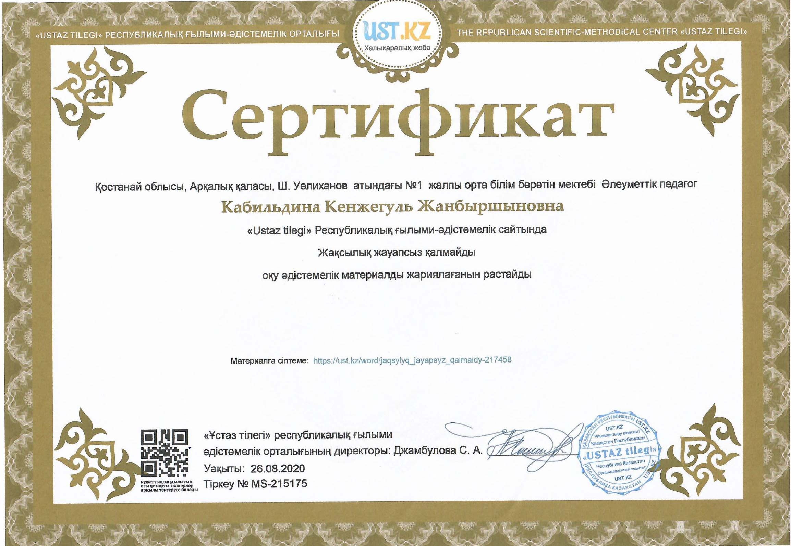
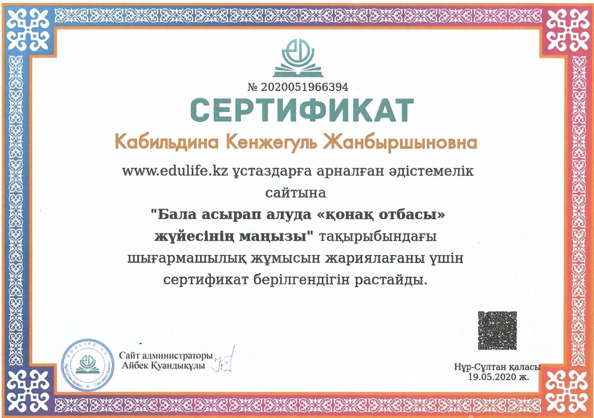

15.02.2018 ж - «Біз өмірді сүйеміз» материалы «Мультиурок» сайтына жарияланғаны туралы куәлік №MUF833467

15.02.2018 ж - «Мейірім шуағы» материалы «Мультиурок» сайтына жарияланғаны туралы куәлік №MUF833461

15.02.2018 ж - «Мен жеке тұлғамын» материалы «Мультиурок» сайтына жарияланғаны туралы куәлік №MUF833453

26.08.2020 ж - «Ұстаз тілег» сайтына «Жақсылық жауапсыз қалмайды» тақырыбында материал жариялағаны үшін сертификат №MS-215175

19.05.2020 - www.edu.kz ұстаздарға арналған әдістемелік сайтқа «Бала асырап алуда «қонақ отбасы» жүйесінің маңызы» атты жұмысын жариялағаны үшін сертификат №2020051966394

17.06.2020 ж- ZIATKER-KZ сайтына “Отбасында зорлық- зомбылық жоқ!» тақырыбында материал жариялағаны үшін сертификат №C-1592374417.
11.06.2021 ж- ZIATKER-KZ сайтына “Бала еңбегін пайдалануға жол жоқ!» тақырыбында материал жариялағаны үшін сертификат №C-1623437583